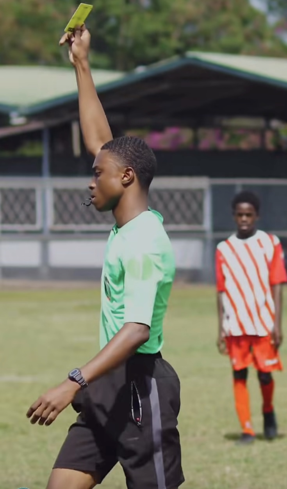
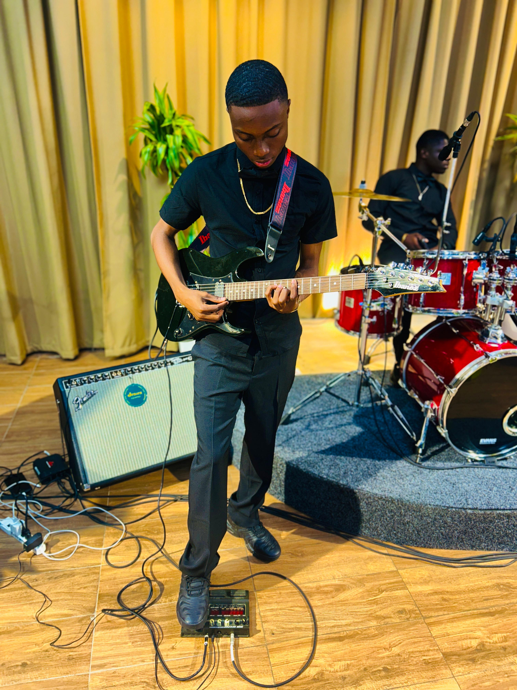

Modern software built with clarity and
I bridge the gap between complex engineering and intuitive design. Specialized in high-performance web systems and engaging digital experiences.

Get to know me
I'm Dave Truideman, 20 years old and a student at UNASAT and a passionate technology enthusiast who enjoys building modern web applications that combine polished interfaces with reliable performance. My approach focuses on creating responsive, user-friendly solutions while continuously improving my skills as a developer.
Beyond technology, I am an official football referee with the Suriname Football Association (SVB), where I develop leadership, decision-making, and communication skills both on and off the field.
Music has been an important part of my life since 2016. I currently play guitar for the band In God's Heart Music. In addition, I serve in my church's music ministry, where I play bass guitar and drums. Through music, I have learned creativity, discipline, teamwork, and dedication.
I am currently working as a Call Agent at Teleperformance, where I have gained approximately one year of professional experience in customer service, communication, and problem-solving.
In my free time, I enjoy playing football and other sports, playing musical instruments, creating YouTube videos, and cooking. I am passionate about personal growth and always look for opportunities to learn new skills, take on challenges, and make a positive impact through technology, music, and community involvement.
Education

B.S. in Computer Science
UNASAT | 2025–Present
- Software engineering fundamentals
- Web architecture and system design
- Responsive interfaces and accessibility



Experience
Teleperformance — Technical Support & Customer Success
- Delivered fast solutions for users while improving digital workflows.
- Translated customer needs into clear technical actions.
- Developed strong communication and collaboration skills in a fast-paced environment.
Technical Focus
Selected Projects
Work that combines design with impact.
A curated selection of web applications that emphasize usability, performance, and meaningful user outcomes.

Suriname Quest
An interactive learning platform that helps students explore Surinamese history through quizzes, stories, and guided challenges.
Overview: Designed to make learning more engaging for young learners by combining educational content with interactive gameplay.
- Secure login and progress tracking
- Interactive history quizzes
- Responsive lessons for desktop and mobile
Portfolio Website
A modern portfolio website built to present projects, skills, and professional experience with strong visual hierarchy.
Overview: A responsive portfolio site designed for clean navigation and concise storytelling.
- Project showcase
- Responsive layout
- Interactive contact section
Contact
Let's build something meaningful.
I’m open to new opportunities and collaborations. Reach out if you have a project, idea, or question.